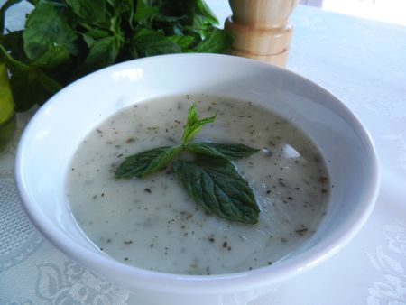

YOGHURT SOUP
Turkish yogurt soup, or yayla corbasi is a traditional Turkish soup that's made
primarily with yogurt. It's a simple warm soup that's perfect for cold days or
days that you'd like to have a light soup that doesn't require much work. It is
naturally vegetarian.
Ingredients
- 1 cup yogurt
- 3 Tbsp flour
- 1 egg
- Salt, to taste
- 2 cups water
- 1 Tbsp boiled rice
- 1 tsp olive oil
- 1 Tbsp chopped dry red bell pepper
- A few fresh and dry mint leaves
Preparation
- Cook the rice. Combine the 4 cups of water and rice in a large pot and bring
it to a boil. Allow the rice to boil until it is fully cooked through and tender.
- Combine yogurt, yolk, and flour. While the rice is still cooking but close
to being done, combine the yogurt, egg yolk, and flour in a large mixing bowl.
- Warm the yogurt with boiling water. You will slowly add one ladle
(about ⅛ cup) of boiling hot water to the yogurt mixture. Mix the yogurt and
water quickly until they are fully incorporated. Repeat this process until the
yogurt mixture is slightly above lukewarm temperature.
- Add the yogurt mixture to the rice. Once the rice has been fully cooked
and the yogurt has been warmed, slowly add the yogurt into the pot of rice while
continuously stirring to incorporate them evenly.
- Allow the mixture to boil. Once you’ve added the yogurt, stir for a few
minutes then leave the mixture to boil uncovered for another 10 minutes.
Do not cover the pot with a lid as it might boil over. Once the soup has
finished cooking, season it with some salt.
- Make the sauce. To make the sauce, simply melt the butter in a small
pan and stir in the dried mint.
- Garnish and serve. Once all your components are ready, you can dish
the soup in a bowl and either serve the butter-mint sauce on top or on the side.
You can garnish your soup with some fresh mint sprigs or red pepper flakes.